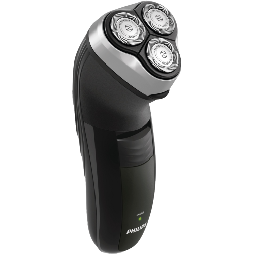
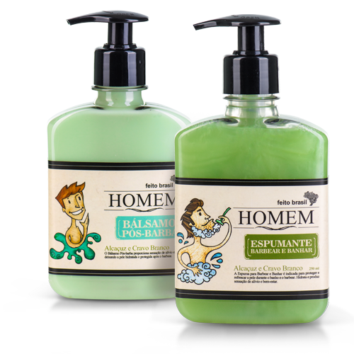
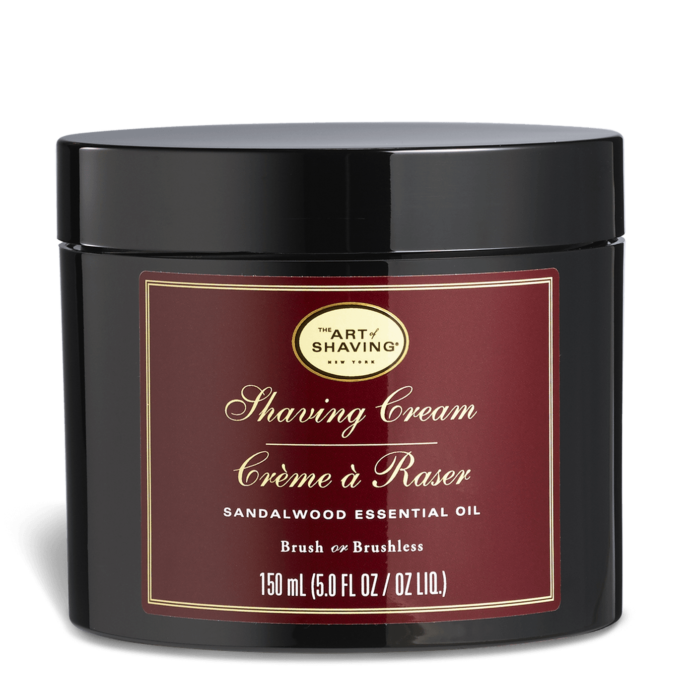

Barbeador elétrico
Descrição
Conta com Selo Aquatec, que garante barbear a seco confortável ou refrescante com a pele úmida. Para um barbear rente, possui o sistema com duas lâminas, integrado ao barbeador elétrico que levanta os pelos para cortá-los de maneira confortável e rente à pele. Sem vibração, silencioso. Além, de funcionar sem fio e ser recarregável, proporcionando maior praticidade e qualidade.
R$ 179,90

Espumante e Bálsamo Pós Barba Homem
Descrição
O Espumante para barbear e o Bálsamo pós-barba proporcionam proteção e hidratação para a pele durante e após o barbear. Possuem fragrância de Verbena com Capim-Limão e Extrato de Alcaçuz e Cravo Branco.
R$ 82,00

Barbeador elétrico
Descrição
Suaviza e restaura o conforto natural da pele. Com a mesma fragrância ousada da deo colônia, tem efeito calmante e suavizante que traz refrescância imediata e proporciona maciez e hidratação sem deixar a pele oleosa. Com óleo essencial de sândalo.
R$ 69,90